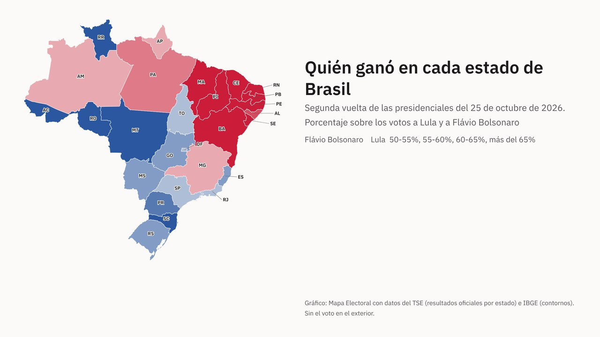

Actualidad · Brasil, estado a estado · Brasil
Lula pasó de perder por 2,2 millones de votos a ganar por 4,4: en el mapa de Brasil solo Minas Gerais cambió de color
En tres semanas, Lula sumó 10,4 millones de votos y Flávio Bolsonaro, 3,7. Casi la mitad de la subida de Lula salió del Sudeste, donde aun así perdió. Frente a 2022, 25 de los 27 estados votaron al mismo candidato, y la región Norte se decidió por 1.079 votos.
Por Nacho G. del Álamo · · Actualizado el

Cada párrafo lleva una etiqueta: dato (cifra comprobable con las fuentes), patrón (relación que se repite, sin afirmar la causa), hipótesis (explicación posible, sin dos fuentes independientes) o contexto (hechos y declaraciones publicados por otros, enlazados). Cómo verificamos
Luiz Inácio Lula da Silva ganó el domingo la segunda vuelta de las presidenciales de Brasil con el 51,79% de los votos válidos, 64.256.232, frente al 48,21% del senador Flávio Bolsonaro, 59.826.041, según el escrutinio completo del Tribunal Superior Electoral (TSE). Tres semanas antes, en la primera vuelta del 4 de octubre, el más votado había sido Flávio, con el 47,03%, dos puntos por delante de Lula. Según EFE, es «la primera vez desde el fin de la dictadura militar (1964-1985) que un candidato que quedó en segundo lugar en la primera ronda electoral se impone en la segunda vuelta a su adversario».
ContextoBrasil elige presidente por voto directo: todo el país es una sola circunscripción y gana quien saca más votos, así que los estados no reparten nada, a diferencia de Estados Unidos. Pero el mapa por estados cuenta dónde está el voto de cada uno y dónde se movió. He descargado los resultados oficiales del TSE de las dos vueltas, estado a estado, y los he comparado con la segunda vuelta de 2022, cuando Lula ganó a Jair Bolsonaro, el padre de Flávio, por 50,9% a 49,1%.
DatoLa remontada rompe una regla que se había cumplido siempre. Desde la vuelta de la elección directa, en 1989, Brasil había celebrado siete presidenciales con segunda vuelta (en 1994 y 1998 Fernando Henrique Cardoso ganó en la primera), y en las siete el más votado en la primera ronda acabó ganando la segunda, como recordaba Bahia Notícias antes de la votación. La ventaja de Flávio el 4 de octubre, 1,87 puntos, era además la más corta de toda la serie: la anterior más estrecha, la de Lula en 2022, fue de 5,23.
PatrónEl gráfico enseña también otra cosa: en seis de las siete elecciones anteriores, el ganador de la primera vuelta llegó a la segunda con menos ventaja de la que tenía. Solo en 2006 Lula la amplió, de 7 a 22 puntos. Con una ventaja de partida tan corta como la de este año, bastaba que el recorte habitual fuera algo mayor para darle la vuelta al resultado.
Ver la tabla por estado
Un solo estado cambió de manos
DatoLula ganó en 13 estados y Flávio Bolsonaro en otros 13 y en el Distrito Federal, la capital. Son casi los mismos que en la primera vuelta: el único que cambió de ganador entre una vuelta y otra fue Minas Gerais, el segundo estado con más electores. El 4 de octubre, Flávio sacó allí el 48,2% y Lula el 43,3%. El domingo, Lula se quedó con el 50,4% de los votos a los dos candidatos, 109.313 votos más que su rival.
DatoEl otro estado en duda era Amapá, en la frontera con la Guayana Francesa. En la primera vuelta, Lula le sacó a Flávio 225 votos: 212.503 frente a 212.278. En la segunda, la ventaja fue de 24.294 votos, el 52,9%.
PatrónMinas tiene fama de termómetro. Desde 1989, el candidato más votado en el estado ha ganado siempre la presidencia, según la cuenta de Revista Oeste, y este año lo volvió a cumplir en las dos vueltas: Flávio ganó Minas y el país el 4 de octubre, y Lula, Minas y el país el 25. El politólogo Benedito Tadeu César, profesor jubilado de la Universidade Federal do Rio Grande do Sul, lo explicaba antes de la primera vuelta en Brasil de Fato, un medio afín a la izquierda:
«Esa división del electorado, que vemos en todo Brasil, ocurre en el estado de Minas, que también expresa esa polarización».
«Essa divisão do eleitorado, que a gente vê no Brasil todo, acontece no estado de Minas, que também expressa essa polarização»
De dónde salieron los 10 millones de votos
DatoEntre las dos vueltas, Lula pasó de 53,9 a 64,3 millones de votos: 10,4 millones más. Flávio Bolsonaro pasó de 56,1 a 59,8 millones: 3,7 millones más. Casi la mitad de la subida de Lula, 4,8 millones de votos, salió del Sudeste (São Paulo, Minas Gerais, Río de Janeiro y Espírito Santo), la región que más vota y donde Flávio volvió a ganar. Solo São Paulo le dio 2,6 millones de votos más, uno de cada cuatro que sumó en todo el país.
Ver la tabla por estado
DatoEsos votos tenían dos orígenes posibles. En la primera vuelta, 9,3 millones de electores votaron a otros candidatos: los que más, el escritor Augusto Cury (Avante), con 3,4 millones; Renan Santos (Missão), con 2,7, y Ronaldo Caiado (PSD), con 2,6. Y en la segunda votaron 2,96 millones de personas más que en la primera: la participación subió del 78,9% al 80,8%.
HipótesisLos datos por estado no dicen quién cambió su voto ni quién se quedó en casa en una vuelta y fue a votar en la otra: son saldos, no trasvases. Una hipótesis la daba el mismo Benedito Tadeu César antes del 4 de octubre: «Hay muchos electores de derecha que no votarían a Flávio y cuya segunda opción de voto es Lula, y por eso tenderían a migrar a Lula. Eso es lo que muestran las encuestas». Comprobarla exigiría encuestas a pie de urna o datos por sección electoral, y no está hecho aquí.
ContextoLa campaña también cambió. Según EFE, después de una primera parte «desorganizada», como la definió el propio Lula, «el gobernante dio un giro radical a su estrategia y llamó a ocupar las calles y las redes sociales», y multiplicó los anuncios desde la Presidencia, entre ellos el perdón de deudas a millones de trabajadores autónomos. Los dos últimos sondeos, publicados la víspera, daban a Flávio el 51% y a Lula el 49%.
Casi el mismo mapa que en 2022
DatoFrente a la segunda vuelta de 2022, 25 de los 27 estados votaron al mismo bando. Solo se cambiaron dos, en sentidos opuestos y en el Norte: Tocantins, que en 2022 votó a Lula, se fue con Flávio por 24.954 votos, y Amapá, que había votado a Jair Bolsonaro, se fue con Lula. Lula subió en conjunto del 50,9% al 51,8% de los votos a los dos candidatos.
DatoEl Nordeste, los nueve estados donde Lula saca sus mejores resultados, votó casi exactamente igual: 69,3% para Lula en 2022 y 69,4% en 2026, con Piauí (75,9%) y Bahía (71,3%) a la cabeza. El Sur también: Santa Catarina dio a Flávio el 69,4%. Donde más subió Lula fue en estados que siguen siendo de su rival: el Distrito Federal (+4,5 puntos), Acre (+3,7), Roraima (+3,6) y Río de Janeiro (+3,4). Donde más bajó, en Tocantins (−2,7), Maranhão (−1,6) y Río Grande del Sur (−1,5).
DatoLa región Norte, la de la Amazonía, quedó partida casi por la mitad. Sumando sus siete estados, Lula sacó 5.024.626 votos y Flávio 5.023.547: 1.079 votos de diferencia entre más de diez millones.
La abstención más baja en veinte años, no en la historia
ContextoEn Brasil votar es obligatorio entre los 18 y los 70 años, según el artículo 14 de la Constitución, y aun así uno de cada cinco electores se queda en casa. Lula presumió en su primer discurso de la noche, según la transcripción de Poder360:
«Tuvimos el menor número de abstenciones de la historia de este país».
«Nós tivemos o menor número de abstenções da história deste país»
DatoNo es así. El domingo no fueron a votar 30,5 millones de electores, el 19,22%. Es la abstención más baja en una segunda vuelta desde 2006, pero en la de aquel año fue del 18,99%, y en la primera vuelta de 2006, del 16,75%. En número de personas tampoco es la menor: en 2006 se abstuvieron 23,9 millones, porque el censo era más pequeño. Lo que sí es raro es que la abstención baje de la primera a la segunda vuelta: pasó del 21,1% al 19,2%. Entre 2002 y 2018 siempre subió; en 2022 bajó por primera vez, del 20,9% al 20,6%.
Flávio no reconoce el resultado
ContextoFlávio Bolsonaro dijo esa misma noche que no acepta la derrota y que pedirá a la justicia anular la elección. Su argumento es la decisión del juez del Supremo Tribunal Federal Cristiano Zanin, que fue abogado de Lula, de prorrogar la votación de las 17.00 a las 19.00 después de que se denunciara falta de transporte público en tres municipios de Bahía. Según el TSE, la prórroga valió solo para las mesas que seguían abiertas a las 17.00, y la campaña de Flávio también había pedido ampliar el horario en 19 ciudades de São Paulo, Paraná y Santa Catarina, según Poder360. En su intervención no presentó documentos que probaran irregularidades en el resultado.
«Es imposible reconocer el resultado de las elecciones en el contexto en que ocurrieron estas cosas. Vamos a usar a nuestros abogados, vamos a pedir la anulación de estas elecciones».
«É impossível reconhecer o resultado das eleições no contexto como essas coisas aconteceram. Nós vamos usar o nosso jurídico, vamos pedir a anulação dessas eleições»
ContextoLula, por su parte, prometió gobernar para todos: «Tengo que gobernar para 215 millones», dijo en el mismo discurso. Asumirá su cuarto mandato el 5 de enero, con 81 años. Según EFE, lo hará «con un Parlamento más escorado a la derecha que hace cuatro años».
DatoEl resumen en el mapa: Lula ganó la presidencia con 4,4 millones de votos de ventaja tras haber perdido la primera vuelta por 2,2 millones, y lo hizo con casi el mismo reparto de estados que en 2022. Minas Gerais fue el único que cambió de color entre una vuelta y otra.
Explora el mapa electoral de España por sección · Más piezas: Trump dice que España fue «invadida»
Método y fuentes
- Qué se compara
- La primera y la segunda vuelta de las presidenciales de Brasil de 2026 en los 27 estados (26 estados y el Distrito Federal), frente a la segunda vuelta de 2022; la ventaja del más votado en cada vuelta desde 1989, y la abstención en las presidenciales desde 1994.
- Límites
- Son totales por estado: no dicen quién cambió su voto entre las dos vueltas ni quién votó solo en una de ellas, así que los votos que suma cada candidato son saldos, no trasvases. El mapa no incluye el voto en el exterior, que sí está en los totales nacionales. Los datos de 2026 son del portal de resultados del TSE y los de 2022 y la abstención desde 1994, de sus datos abiertos. La abstención se calcula sobre los electores con derecho a voto para presidente. En la primera vuelta, el color del mapa compara solo a Lula y a Flávio.
- Cómo se calcula
- Porcentajes sobre votos a candidaturas, salvo la participación, que es sobre el censo. Cifras reproducibles con los scripts del expediente de la pieza. Metodología de Actualidad · Metodología del Atlas
- Fuentes
- Tribunal Superior Electoral de Brasil, resultados oficiales de la primera y la segunda vuelta de 2026 por estado
- TSE, datos abiertos: votación por candidato, municipio y zona de 2022, y detalle de la votación por municipio y zona de 1994 a 2022 (abstención)
- IBGE, mallas territoriales de los estados (vía click_that_hood), simplificadas
- EFE vía Yahoo Noticias, Lula gana las elecciones presidenciales tras una remontada inédita ante Flávio Bolsonaro (25-10-2026)
- Poder360, íntegra del discurso de la victoria de Lula (25-10-2026)
- Poder360, íntegra del discurso de Flávio Bolsonaro (25-10-2026)
- Brasil de Fato, entrevista al politólogo Benedito Tadeu César (UFRGS) (30-9-2026)
- Revista Oeste, Minas Gerais y el ganador de las presidenciales desde 1989
- Constitución de la República Federativa de Brasil, artículo 14
- Bahia Notícias, desde 1989 quien gana la primera vuelta gana también la segunda (resultados de 1989)
- Gazeta SP (Folhapress), Brasil nunca tuvo una remontada en segunda vuelta desde las Diretas Já (resultados de 1989)
- Autoría
- Nacho G. del Álamo
- Revisión de datos y texto
- Nacho G. del Álamo, 26 de octubre de 2026
- Publicado · actualizado
- 26 de octubre de 2026 · 27 de octubre de 2026, a las 06.55
- Correcciones
- Ninguna.
Serie «Internacional»: 4 piezas
- Solo una televisión le daba la mayoría a Netanyahu
- Estás aquíLula pasó de perder por 2,2 millones de votos a ganar por 4,4: en el mapa de Brasil solo Minas Gerais cambió de color
- Vučić ganó en los 25 distritos de Serbia en 2023; los estudiantes le han ganado en 18 y en Zaječar el recuento va por 31 votos
- Con el 70% escrutado, Netanyahu se queda en 54 escaños y solo llegaría a 61 con Liberman; la oposición, solo con los partidos árabes
Más datos: más piezas sobre elecciones internacionales.
Sigue leyendo
- Las llaves y la urnaDonde viven los caseros gana el PP; donde viven los inquilinos, gana la abstención
- Quién votaEn los barrios ricos se vota 15 puntos más que en los pobres, y en las europeas, 22: quién vota en España según la renta, la edad y la inmigración
- Inmigración y 29NLa inmigración ya le cuesta votos al PSOE, no solo al PP
- ActualidadTodas las piezas de actualidad
- AtlasAtlas de las anomalías electorales